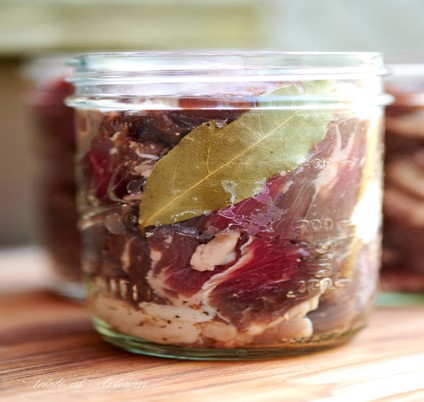

Lesson 16
UNIT 3
Livestock production
technology
BASIC PROCESSING TECHNOLOGIES
OF ANIMAL PRODUCTS

Meat preservation
Learn the active vocabulary of the Lesson and be ready to use it in your further work
Pickling n –
маринування;
flavour
n -
смак,
аромат;
keeping qualities збереження
якості;
saltpeter n –
селітра;
spoilage n –
псування;
pickling solution –
маринад;
nitrate n – нітрат, сіль або ефір азотної
кислоти;
potassium n –
калій;
smoking process – процес
коптіння;
preserve v –
зберігати;
surface n –
поверхня;
brine n – розсіл,
рапа;
blood vessel – кровоносна
судина;
rigor mortis – трупне
задубіння;
pork n – свинина;
soak v – вбирати,
всмоктувати;
smoking chamber – коптильна
камера;
sliced p.p. –
нарізаний;
parchment n –
пергамент;
ham
n
– шинка;
merely
ad
– тільки, просто;
impart
v
– давати, додавати;
lard
n
– сало;
adipose
tissue
– жирова тканина;
grainy
lard
– зернистий лярд, свиняче сало;
tub
n
– діжка, баддя;
water-jacketed
kettle
– котел з водяним охолодженням;
treatment
обробка;
kettle-rendered
lard
– котельний лярд (пряжений у відкритому
котлі).
Read and translate the text:
MEAT
PRESERVATION
The preservation of meat may be accomplished in
numerous ways including the use of refrigeration, canning, drying, and salting,
pickling, and curing. The latter methods are of ancient origin and are widely
used at present, both in the modern packing house as well as in rural
communities.
Salting is often followed or combined with other
processes, such as smoking, which improves both the flavour and keeping
qualities of special products, including hams, and bacon. In the use of salt
as a preservative, either alone or in combination with such compounds as
saltpeter, nitrates of sodium or potassium, there are several objectives. It is
necessary to prevent spoilage by microorganisms, but in addition the final
product must have a desirable taste and flavour. The appearance must also be
attractive. It has been common practice for many years to use the pickling
solution because of increased efficiency in curing meat products. More
recently the nitrites have been found even more effective. The nitrates
serve a useful purpose in respect to the appearance of the products because when
they are present, certain changes take place where the hemoglobin of the meat
tissues is chemically combined to form nitrosohemoglobin.
The nitrites are more effective than nitrates in
checking spoilage and also have the colour fixing ability. Sugar is also used as
a constituent of pickling solutions. Many of the solutions containing sugar are
called sweet pickling processes. In some instances the so-called dry sugar cures
may be used, in which case the meat is packed in tight containers and sprinkled
with dry mixtures of salt, sugar and small quantities of nitrate or nitrite. It
is a common practice of smoke some salt- cured meat and meat products.
The smoking process preserves not only on
account of some drying of the meat through the heat applied during smoking but
also on account of the chemicals deposited on the surface. These compounds may
penetrate 130 somewhat into the meat and to inhibit bacterial growth and action,
instead of smoking meats it is possible to use a specially prepared salt meat.
Such salts have a pleasant smoked flavour which may be imparted to meat by using
dry-curing processes and eliminating the smoking operation. Meats may be
preserved by means other than refrigeration, although chilling is the first
step, and preliminary to any further treatment.
In Europe a number of different methods have been
suggested to accomplish the same purpose. One depends on injecting the
brine by pressure into the heart of the still bleeding animal. Another
depends on the injection of the brine into a blood vessel under pressure
after rigor mortis has set in. A third method consists in subjecting the
meat to a vacuum and ihen subjecting it to a brine under pressure for several lr
urs.
Pork
curing. Bacon and hams.
Pork is sometimes dry-cured by rubbing with salt and piling-in stocks in curing
cellars, which are kept at relatively low temperature. A small percentage of
saltpeter may be added to the salt to assist in the colouring of the
tissues. If the cuts are packed by layers and other curing agents added between
the layers, there will eventually be a brine formed owing to the extraction of
water from the tissues. This method is commonly used for bacon which requires
several weeks to cure, after which it is removed from the brine, soaked in water
for short time and smoked. The soaking may be omitted if the meat is subjected
to a spray of hot water followed by drying with a compressed air jet which
evaporates the excess moisture on the surface.
Bacon is usually aired for a number of hours in the
warm air of the smoking chamber before the actual smoking is started.
When the smoking is completed any salt which has crystallized on the interior is
brushed off and the bacon packed in boxes, barrels, or other containers for
shipment.
Some bacon, sliced or unsliced, is now packed in
transparent parchment to keep it clean and preserve its appearance. Bacon may
also be canned. Hams, which make up one of the most valuable meat products from
hogs, are the hind legs of swine from above the hock. There are many kinds of
hams depending largely on the type of curing process and the methods of smoking
used. The flavours are due in part to the pickle, which may contain sugar. Along
with the other agents mentioned above, flavours may also be due in part to the
wood used in smoking.
Most hams contain an abundance of fat, but virginia
hams, which are quite noted for quality and flavour, are relatively lean. The
function of the smoke is not merely to impart the characteristic flavour, but it
also serves to inhibit the microorganisms which gain access to the surface of
the meat.
Lard.
Lard is the fat separated from the adipose tissues of hogs for use as a
food Three kinds of lard are manufactured on a commercial basis: prime steam,
neutral, and kettle-rendered. Lard is packed and sold as smooth or grainy lard.
Smooth lard is lard which is cooled quickly to prevent the separation of the oil
and stearin. It is precooled to about 110 °F and further cooled by a lard roll,
a metal cylinder cooled within by means of brine or by the direct expansion of
amnionic.
Grainy
lard
is preferred by certain commerce. It derives its name from the grainlike
appearance of the solid portion. Lard may be stored in tubs. Sodium silicate is
sometimes used on the inside of wooden tubs and pails in order that lard may not
be absorbed and thus wasted. Paraffin is employed often instead of silicate.
Neutral lard is manufactured mainly from back fat and leaf fat. The material is
chilled, cut up very fine, and placed in a waterjacketed kettle. The
water in the jacket is slowly heated, causing the lard to separate from the
fibrous material. Lard obtained by this process is white, but without definite
flavour. It is used in the manufacture of margarine without
treatment.
Kettle-rendered lard. Lard of this
kind is made from the better grades of fats. The fats are basketed into
steam-jacketed kettles, the fat separated from the fiber and then put up into
packages while still hot.
GRAMMAR
EXERCISES
I.
Answer the following
questions:
1. What methods of meat preservation do you
know?
2. What does the smoking process
preserve?
3. What is it possible to use instead of smoking
meats?
4. What do you know about pork
curing?
5. What is lard?
6. What kinds of lard do you
know?
7. What lard is used in the manufacture of
margarine?
II. Fill in the gaps using the words in the
box:
|
Low temperature, desirable, characteristic flavour, smoked,
methods of smoking, curing, appearance,
salted. |
1. The main aim of food preservation is to prevent
spoilage by microorganisms, but in addition the find products must have a
____________ taste and flavour.
2. Smoke contain phenols which help in the
preservation of __________ products.
3. Potassium nitrite and potassium nitrate, used in
the __________ of pork and beef, improve the taste and redden the colour.
4. _________ products are usually partly dried as well
as salted.
5. The nitrates serve a useful purpose in respect to
the ___________ of the products because when they are present certain changes
take place.
6. There are many kinds of hams depending on the type
of curing process and the __________ used.
7. The function of the smoke is not merely to impart
the __________ , but also serves to inhibit the microorganisms which gain access
to the surface of the meat.
8. Pork is sometimes dry-cured by rubbing with salt
and piling in stocks in curing cellars which are kept at relatively
____________.
III. Choose
the correct form in bold:
1.The preservation of meat may be
accomplish/accomplished in numerous
ways.
2.The appearance of the final product must/may
have a desirable taste, flavour,
appearance.
3. Sugar is/are used as a constituent of
pickling solution.
4. In Europe a number of different methods has/have
been suggested to
accomplish the same
purpose.
5. This method is/are commonly used for bacon
which require/requires several weeks to
cure.
6.Some bacon, sliced or unsliced, is packed/is
packing in transparent
parchment to keep it clean and preserve its
appearance.
7.Lard is the fat separating/separated from
adipose tissues of hogs for use as a food.
8.The water in the jacket is slowly heated,
causing/caused the lard to separate
from the fibrous
material.
IV. Transcribe and pronounce correctly the
following words:
Slice, nitrate, flavour, surface, saltpeter, brine,
treatment, spoilage, impart, manufacture.
V. Match the
word or words with the
definition:
|
1. Pickle 2. brine 3. treatment 4. solution 5. steam 6. stew 7. lard 8.
lasagna |
a) thick white fat used in
cooking; b) to preserve food in vinegar and
salt; c) to cook something slowly; d) processing; e) a liquid in which a solid or a gas has been
dissolved; f) a type of Italian food; g) the mist that hot water
produces; h) salty water, often used for preserving
food. |
VI. Translate
into English:
1.
Копчене
і
мариноване
м'ясо
зазвичай
зберігають
в
холодильниках
і
погребах.
2.
В розсіл для засолювання м’яса обов’язково повинні входити цукор, а також
селітра, яка надає м’ясу приємного кольору. 3. Бекон і окіст після маринування
піддають в’яленню. 4. Новим методом засолення м’яса є вприскування. Спеціальним
шприцом розсіл вводять у кровоносні судини під тиском одразу після забою
тварини. 5. Лярд буває декількох видів: чистий, м’ясний, еластичний і зернистий.
6. Деякі сорти лярду використовують у виробництві маргарину без подальшої
обробки. 7. Еластин не піддається впливу тепла, тому м'ясо, яке містить значний
його відсоток, важко зробити м’яким при обробці. 8. Перед коптінням, бекон
провітрюють на теплому повітрі протягом декількох годин, а потім коптять. 9.
Якщо після коптіння на беконі залишається сіль, її витирають і бекон складають в
ящики і беконки.
VII. Read the
text without a dictionary and discuss
it:
FOOD CELEBRATES
LIFE
Have you ever noticed how much of our life is centered
on food? Look at all the meeting held, decisions made, and mergers consummated
over a meal: power breakfasts, power lunches, dinner, banquets, receptions, and
those endless toasts. Consider all the celebrations where food is all-important:
weddings, birthdays, religious feast days, national holidays, etc. Food is the
great icebreaker when people meet for pleasure or business. Food is at the
center of many of our important activities.
Often the difference among cultures in the foods they
eat related to the difference in geography and local resources. People who live
near water (the sea, lakes, and rivers) tend to eat fish and crustaceans. People
who live in colder climates tend to eat heavier, fatty foods. However, with the
development of a global economy, food boundaries and differences are beginning
to dissipate: Mcdonalds is now on every continent except Antarctica, and tofu
and yogurt are served all over the world.
VIII. Do you
know any Ukrainian equivalents of the following
English
idioms? Can you make up any situations to illustrate
some of them?
1. Never buy a fish till it’s
caught;
2. Oil and water don’t
mix;
3. Packed like
herrings;
4. The nearer the bone, the sweeter the
flesh;
5. To cook a hare before catching
him;
6. Too many cooks spoil the
broth.